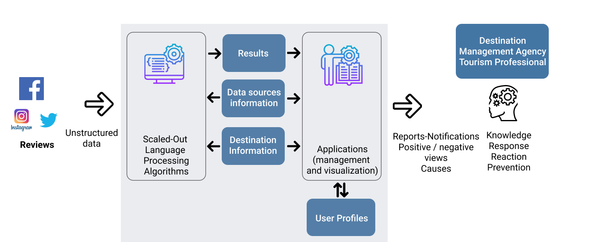

Description

Idea The views on the internet and on social networks with tourist experiences vary in form, expressivity, emotion. Social Media, Traveler reviews, travel bloggers and journalists in many different languages record bad or good travel experiences with views on business and destinations.
-
How directly and easily does the tourist practitioner identify the point of view?
-
Are destination management organizations systematically aware of the image created from a viewpoint in an online forum in a foreign market?
-
How can automated content tracking and analysis mechanisms extract knowledge from countless texts, while maintaining reliability in terms of accuracy of results and performance in large data sizes?
Sentitour attempts to provide answers and test solutions for the benefit of tourism professionals and operators who manage tourist resources. By combining the adaptation of modern Natural Language Processing technologies, neural networks and high performance distributed computing with linguistic analysis thematically adapted to tourism, Neurolingo and the Research Technology Foundation develop, test and evaluate a service prototype for opinion analysis in tourism.
Motivation & Needs Visitors to a tourist destination very often record their opinions and experiences in online / social media. Users of these media often express the intention or desire to visit a place for recreation. They can reasonably suggest a destination or tourist activity. Sometimes they are negative and dissuasive. Identifying and analyzing these views provides valuable insight to a manager and promoter of a tourist destination. Existing emotional analysis mechanisms in unstructured data collections do not export accurate knowledge. They use statistical approach. They do not evolve and do not easily adapt to thematic requirements, concepts, languages, and geographic data. They do not incorporate linguistic analysis capabilities that are specialized in tourism, and can not scale over the vast amounts of data coming from the internet.
The project Sentitour develops and adapts the natural language analysis and processing algorithms to meet the needs of tourism into analyzing and justifying views. Targeted linguistic analysis of texts and views will ensure the desired response to the industry. It incorporates modern methods of deep learning into word and term detection platform, for their application to the recognition of concepts in order to more accurately analyze views and causes. It seeks to process a large volume of such data. The algorithms will be executed in advanced scaling mechanisms within all processing phases: data transformation, training and use of the computational model. The architecture will use the distributed memory to load the data and implement a variety of operators to extract the necessary attributes that the computational model uses. It delivers reports and notifications applications that will visualize the results of analyses to show their usefulness in scenarios supporting the tourism professionals.
Pilot Application Applying and evaluating Sentitour to selected destinations will allow the evaluation of the platform in real data and conditions and in respect to technological performance indicators usability and quality criteria.
Goals
-
ACCURACY
Accurate and in time analysis of views recorded in digital media about destinations and tourist services. -
SPECIALIZATION
Automated text analysis mechanisms with engineering-focused learning techniques adapted to tourism -
HIGH PERFORMANCE
Ensuring scalability over large adapted data volumes. -
EFFECTIVENESS
Supporting business processes for the marketing and management of tourism resources by business-oriented professionals and management bodies in tourism.
News
-
September 2019
First version - Prototype
-

June 2019
Experimental performance assessment over Deep Learning algorithms
-
December 2018
Adaption of linguistic resources
-
July 2018
Project starts
Partners

Neurolingo
A lexicographic analysis company in Greece
Foundation for Research and Technology - Hellas (FORTH)
The country's leading Research Foundation
Contact
Science and Technology Park
N. Plastira 100
Vassilika Vouton 70013 Heraklion Crete
2810-391227
sentitour@neurolingo.gr